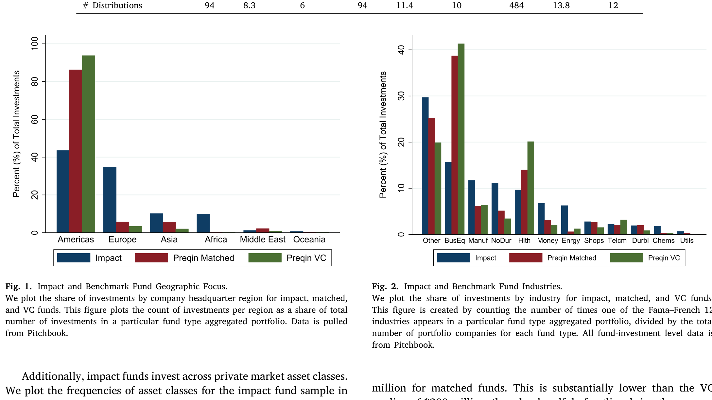
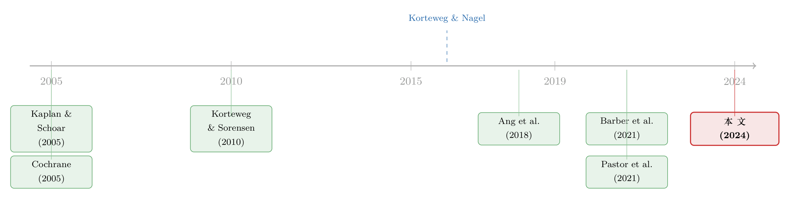

良心的「风险」标价：影响力投资到底让渡了多少收益？
本文读的是 Jeffers, Lyu & Posenau (2024, Journal of Financial Economics)：第一次系统刻画了影响力投资基金的风险暴露与风险调整后业绩。核心发现是——影响力基金的市场 β 比可比私募策略更低；它们的绝对收益确实跑输公开市场（KSPME = 0.743），但一旦把这份「低风险」算进去，它相对于匹配基金和 VC 的「财务让步」就所剩无几。而真正巧妙的，是他们怎么在只有现金流、没有价格的世界里，把 β 给「读」出来。
1 一个长期争吵不休的问题
过去十年，影响力投资 (impact investing) 募到的钱越来越多。它的卖点写在招牌上：既要财务回报，又要一个社会或环境目标。可正因为「既要又要」，它从诞生那天起就一直被人质疑——这样一只「带着镣铐跳舞」的基金，凭什么不亏钱？
批评者的逻辑很干脆：在标准假设下（市场完美而完整、投资者理性且信息充分），任何受约束的策略，其风险调整后收益必然低于不受约束的策略（Brest et al., 2018；Barber et al., 2021）。换句话说，你为了「做好事」而缩小了可选集，就得为这份执念交一笔「收益让渡」（return concession）。也有人反驳说，私募市场里那套完美假设根本不成立（Cole et al., 2021）。
争论吵了很久，但有一块拼图始终缺席：没有人真正测过影响力投资的风险暴露。 这件事远比听起来要紧。如果影响力基金天生就是一类低风险资产，那它收益低一点，可能根本不是「让步」，而只是「便宜的风险换来便宜的回报」——天经地义。而一旦把风险算清楚，那些看上去「让渡了收益」的绝对数字，说不定就能和一个「对某些投资者而言完全划算」的策略和解。
这正是本文要补的洞。
2 两道拦路的难题
要算影响力投资的风险与收益，你会立刻撞上两堵墙。
第一堵墙：没有数据。 影响力基金是私募基金，现金流不公开、不披露，世面上根本没有一个现成的数据集。
作者的解法是自己造一个：把影响力金融研究联盟（Impact Finance Research Consortium, IFRC——由沃顿、哈佛商学院和芝加哥布斯三家合办）直接向基金征集来的财务报表，和 Preqin 数据库里能匹配上的影响力基金拼在一起。最终样本是 94 只基金（48 只来自 IFRC 直采，46 只来自 Preqin），成立年份（vintage）覆盖 1999–2015，现金流一直到 2021 年底。其中 87 只有季度数据，7 只用年度数据。这是文献里第一份影响力基金的现金流数据集。
第二堵墙——也是更要命的一堵——是方法。 私募基金（VC、并购等）的现金流又稀疏又高度偏态：钱一笔笔投进去，过好几年才一笔笔分回来。你没有连续的价格序列，也就没法像对一只股票那样跑一个线性因子回归去估 β。影响力投资样本量小、基金又年轻，这个问题只会更糟。
一个看似省事的捷径是用基金自报的净资产价值 (net asset value, NAV) 去构造收益序列再做回归。但 NAV 是经理人自己「画」出来的估值，平滑、滞后、还可能粉饰，基于 NAV 的收益度量早已饱受批评（Korteweg, 2019）。本文的方法完全绕开了 NAV——只用真实现金流。
那么，怎么在只有现金流、没有价格的情况下，把一只基金的市场 β 估出来？这就是全文最漂亮的一步。
3 把 PME 的「bug」变成一把「尺子」
故事得从私募业绩评估里最常用的一个指标——公开市场等价 (Public Market Equivalent, PME) 说起。
Kaplan 和 Schoar (2005) 提出的 KS-PME，思路朴素到几乎是「常识」：把基金每一笔分配和出资，都用同期公开市场（这里是 S&P 500 全收益指数）的累计收益贴现，再相除。
PME > 1，意味着「这笔钱投基金比投指数更值」；PME < 1 则相反。简单、直观，也因此风行。
但 Korteweg 和 Nagel (2016) 指出了它的一个系统性毛病：PME 会高估高 β 资产的业绩，尤其在公开股市上涨的年代。 直觉是这样的——PME 用市场收益本身去贴现，这相当于偷偷假设了基金的 β = 1。可如果一只基金的真实 β > 1，它在牛市里本应跑赢市场更多（因为它放大了市场风险），PME 却把这部分「本该如此的超额」误记成了「经理人的本事」。β 越高、市场涨得越多，这种高估就越严重。
于是 Korteweg 和 Nagel 提出广义公开市场等价 (Generalized Public Market Equivalent, GPME)：不再用市场收益粗暴贴现，而是用一个随机贴现因子 (stochastic discount factor, SDF) ——其对数取市场收益的线性形式——来给现金流定价，让它同时能正确地为市场组合和无风险债券定价。
$$GPME = \mathbb{E}\!\left[\sum_{t=0}^{T} M_t\,(D_t - C_t)\right], \qquad \log M_t = a + b\sum_{s=1}^{t} r_{m,s}$$
这里的 b 就是承担市场风险的载荷，它把 β 显式地放进了定价里。当一个被动持有市场组合的策略其 GPME = 0 时，参数被钉死；此时 GPME 度量的就是真正的、风险调整后的「异常业绩」（每投入 1 美元的风险调整 NPV）。
真正关键的一步在于本文作者的反向思考。 别人把 PME 的偏误当成缺陷想方设法去修；他们却意识到：既然这个偏误的大小恰恰随资产的 β 单调上升，那么——
PME 与 GPME 之间的那道缝（作者称之为「PME 楔子」, PME wedge），本身就是一把测量
β的尺子。
逻辑闭环了：如果影响力投资的 PME 楔子是正的，就说明它的市场 β > 1；楔子越大，隐含的 β 越大。作者还把这套思路从市场因子推广到另外两个与影响力投资高度相关的因子——一个公开可持续性因子和一个新兴市场因子。
这是一个少有的「化腐朽为神奇」的例子：一个被公认为应当被修正的统计偏误，被原样保留下来，当成了识别风险的信息源。
4 数据与基准：和谁比？
光有 β 的尺子还不够，你得有个参照系。作者搭了两个。
其一是匹配基金 (matched funds)。 对每一只影响力基金，从 Preqin 里找一只成立年份相同、资产类别相同、规模最接近的非影响力基金配对。它的思想实验很清楚：如果一位投资者要在「投 1 美元给影响力基金」和「投 1 美元给一只其他方面都可比的非影响力基金」之间二选一，这个选择对风险和收益意味着什么？匹配，就是为了尽量把「影响力」之外的特征（成立年份、资产类别、规模这些已知影响风险的维度）控住。
其二是美国 VC 基金。 之所以选 VC 当第二个基准，是因为 VC 是整个影响力基金宇宙里出现频率最高的资产类别——Wiek et al. (2022) 说 2007 年后募集的影响力基金里 43% 是 VC，本文样本里也约占 40%——而且 VC 偏爱股权和少数股权，和影响力基金气质相投，加上它的风险收益性质被研究得最透（Korteweg, 2019）。代价是：和 VC 比并非「同类相比」，会掺进资产类别、年份、规模的杂音。
影响力基金到底有多「散」？它横跨地理、行业，甚至资产类别，比可比私募基金分散得多。下图给出样本中影响力基金的资产类别分布——VC 是出现得最多的一类，但远谈不上一家独大。

Figure 3: The most common asset class in our sample of impact funds medianof$280million,thoughahandfulofoutliersbringtheaverage
先看一眼绝对业绩（如表 2）。影响力基金的 KSPME 均值 0.743、中位数 0.731，显著低于 1——也就是说，单看绝对数，它跑输了 S&P 500。作为对照，匹配基金的 KSPME 是 0.994，VC 是 0.914。倍数 (multiple) 上，影响力 1.154，匹配 1.529，VC 1.568；内部收益率 (internal rate of return, IRR) 的差距更刺眼：影响力均值 −0.325%，匹配 9.935%，VC 5.374%。
如果故事到这儿就停，那「影响力投资=收益让渡」的结论似乎板上钉钉。但这恰恰是本文要掀翻的桌子——这些数字里，还没把风险扣出来。
5 三个核心发现：把风险扣出来之后
发现一：影响力投资的市场 β 更低。
用 PME 楔子这把尺子量下来，影响力投资对公开股市波动的敏感度，低于匹配基金，更是远低于 VC。注意，它的 β 仍然大于 1（楔子是正的），所以它依旧是顺周期 (pro-cyclical) 的——只是没那么「顺」。作者还做了一个漂亮的「加杠杆」实验：当人为地给影响力现金流加杠杆时，PME 楔子随之扩大，正与「β 随杠杆放大而上升」一致；但影响力基金的楔子涨得比匹配基金和 VC 都慢。更直接的证据是：一个做多 1 美元匹配/VC 基金、做空 1 美元影响力基金的组合，其 β 仍为正——说明匹配和 VC 承担的市场风险，确实比影响力更高。一句话：把可比的私募投资换成影响力，会降低投资者的整体市场风险暴露。这为 ESG 的「对冲观点」（hedging view）提供了私募市场的支持。
发现二：扣掉风险后，「让步」大幅缩水。
影响力基金在风险调整后跑输公开市场 −$0.47／每投入 1 美元；而匹配基金是 −$0.33／美元。差距看着还在，但关键的检验是组合层面：一个按价值加权、做多匹配、做空影响力的组合，其市场风险调整后收益只有 −$0.015，在统计上与零无异。换句话说，影响力相对于真正可比的非影响力策略，风险调整后几乎没有让步。
那为什么两者都是负的？因为近几十年 VC 这类基金整体就跑输了公开市场（Harris et al., 2014；Gupta and Van Nieuwerburgh, 2021）。本文的 VC 基准在同期、扣掉 β 解释的部分后，平均跑输公开市场 $0.43／美元；做多 VC、做空影响力的价值加权组合，风险调整后收益为 −$0.16。所以，如果投资者在意的是市场风险调整后收益，影响力基金相对其他私募基金未必是「让步」的。
发现三：参照系（投资者的品味与财富组合）会改写结论。
这是全文最有「相对论」味道的一节。作者在 Pastor et al. (2021) 的框架上往前走：先在模型里加一个公开可持续性因子，发现它能改善对影响力基金收益的解释力，却对匹配和 VC 没用——可持续性「品味」(taste) 确实在影响力收益里留下了印记。
接着，一个自然的问题是：凭什么认定「公开市场」就是投资者财富的最佳代表？对于一位财富回报更接近公开可持续性指数、或更接近新兴市场指数的投资者来说，影响力基金相对非影响力基准的财务让步会更大。而且影响力基金对新兴市场 (emerging markets, EME) 因子的暴露远高于匹配基金——这一点也呼应了样本里影响力投资大量分布在新兴市场经济体的事实。
于是结论被推到一个更细腻的位置：影响力投资的财务「优劣」，取决于你是谁、你的另一半财富押在哪里。 同一只基金，对持有市场组合的投资者是一种账，对持有新兴市场敞口的投资者又是另一种账。
这与「撤资能不能改变世界」的辩论是一体两面。关于卖掉一只「脏」股票究竟有多大成本、收益让渡如何计价，可参见《卖掉一只「脏」股票，真能改变世界吗？》；而把 ESG「品味」写进均衡、量化投资者偏好的思路，可参见《三万五千亿美元的 ESG，到底「倾斜」了多少？》与《良心是有价的：当大学捐赠基金为「责任投资」买单》。
6 文献脉络
把这篇论文放回它生长的那条线里，会看得更清楚。
最早的一支，是给私募股权和 VC 的现金流做风险收益分析的资产定价文献，从 Cochrane (2005) 起步，经 Korteweg and Sorensen (2010)，到近年的 Ang et al. (2018)（用贝叶斯方法在线性因子结构下估私募收益）和 Gupta and Van Nieuwerburgh (2021)（用股息条价格逐期风险调整）。本文承认自己「重重地」站在这条线上。
而它的方法论命脉，则来自业绩评估这一支：Kaplan and Schoar (2005) 的 PME，与 Korteweg and Nagel (2016) 的 GPME。本文的全部巧思，正是把后者所记录的「PME 偏误」倒过来用，去反推 β。

另一支是影响力投资本身的新生文献：Burton et al. (2021) 建了投资者与企业特征的数据库，Geczy et al. (2021) 刻画了影响力基金的契约与治理实践；理论上有 Chowdhry et al. (2019)、Oehmke and Opp (2022)、Green and Roth (2021)、Gupta et al. (2022) 等为影响力投资的存在与作用建模。最贴近的是两篇做财务业绩、却未显式处理风险的论文：Barber et al. (2021) 用支付意愿模型估出投资者愿意为影响力基金接受 2.5%–3.7% 更低的 IRR；Cole et al. (2021) 发现某大型影响力投资者近七十年的长期收益跑赢市场约 15%。本文给这两篇补上了缺的那一块——把业绩里能被系统性风险、可持续性因子和新兴市场因子解释的成分拆出来。
最后，它也接进了更广的 SRI/ESG 文献。在公开市场里，SRI 与市场的协方差方向至今含混：Bansal et al. (2022) 发现 SRI 高度顺周期，Nofsinger and Varma (2014) 与 Pastor and Vorsatz (2020) 却发现可持续基金在危机中跑赢，Dunn et al. (2018) 则认为高 ESG 暴露的股票风险更低。本文把战场搬到私募市场，给出了一个清晰的答案：影响力投资是顺周期的，但比可比的非影响力策略「顺」得更轻。
7 评论与延伸（Q&A + 研究方向）
(a) 几个可能的疑问
Q：PME 楔子真能干净地识别 β 吗？会不会混进了别的东西？
这是全文最该被追问的地方，作者自己也承认。任何为影响力估出的 PME 楔子，都可能由一般性的私募趋势、资产类别或择时驱动，而不只是「影响力」成分。他们的对策是用匹配基金（同年份、同资产类别、最近规模）把这些维度差分掉，再用 VC 做第二参照系。但「完美控制影响力之外的一切」是做不到的，对 VC 的比较更非同类相比。所以更稳的读法是相对结论（影响力
β低于匹配/VC），而非某个绝对β数值。
Q：用「最后一期 NAV」当未清算基金的最终分配，会不会污染结果？
影响力基金期限通常约十年，样本期末仍有基金没清算完。作者沿用 Harris et al. (2014) 和 Korteweg and Nagel (2016) 的做法，把最后一期 NAV 当作最终分配，并坦承这笔现金流没算进未来费用。好处是这套方法只在「最终值」上用一次 NAV，远不像基于 NAV 的收益回归那样处处依赖它。
Q：样本只有 94 只基金，而且只保留「追求市场利率回报」的基金，会不会把结论选偏了？
恰恰相反，这个限制是为了不偏。如果把那些明确追求低于市场回报的基金也放进来，结果会被人为推向「低回报」（Cole et al., 2021）。作者只保留市场利率导向的基金，意思是：连这些「不打算让步」的基金都拿来检验，看它们到底有没有让步。代价是结论只适用于这一类基金。
Q：IFRC 直采的基金会不会正向选择——做得好的才愿意交报表？
有这个嫌疑：IFD 基金的 IRR 确实高于 Preqin 影响力基金，不过倍数和 PME 两者相近。同时 Preqin 的 VC 基金相对 Burgiss 又显得偏负向选择。作者的判断是，把 Preqin 和 IFD 拼在一起，两个方向的选择偏误大致互相抵消。更要紧的是，他们的核心结论关乎
β——而β既难算、基金又不向投资者报告，基金按β自我选择的可能性很低。
Q：影响力基金的 β 更低，到底是「影响力」带来的，还是「投在新兴市场」带来的？
这两者在样本里高度纠缠。影响力投资大量落在新兴市场，而影响力基金对 EME 因子的暴露也确实远高于匹配基金。作者把 EME 单列为一个因子来处理，正是想分辨这件事。诚实地说，这更像是影响力投资风险画像的一个组成部分，而非可以彻底剥离的「干扰项」。
Q：「不是让步」是不是说影响力投资就是免费午餐？
不是。相对公开市场，影响力基金风险调整后仍跑输
−$0.47／美元；只是相对同样跑输的可比私募策略，这份差距小到统计上不显著。结论是「相对其他私募基金未必让步」，不是「相对一切都不让步」。
(b) 几个可能的研究问题与提案
1. 把这把「PME 楔子」尺子搬到公司债 / 私募信贷基金上
- 【经济故事】私募信贷（direct lending）近十年爆发式增长，但它的市场
β和信用β究竟几何，同样卡在「现金流稀疏、没有价格」的老问题上。把本文的 GPME 楔子方法推广到一个信用因子（而非市场因子），或许能在不依赖 NAV 的前提下读出私募债的系统性信用风险暴露。 - 【可行性】中。需要私募信贷基金的现金流（Preqin/Burgiss 有部分覆盖）和一个可交易的信用基准（如 IG/HY 债指数）。难点在于把楔子—
β的映射从市场因子推广到信用因子的理论刻画。
2. 外资持有人的「品味」会不会改写新兴市场影响力基金的让步？
- 【经济故事】本文已证明，投资者的财富组合（如新兴市场敞口）会改变影响力投资的财务账。一个自然的延伸是：当 LP 本身就是外国机构、其本币财富与美元市场弱相关时，影响力基金对它而言的「让步」可能完全不同——甚至变成对冲工具。
- 【可行性】中偏低。需要按 LP 国别/币种拆分的影响力基金出资数据，这类数据极难获得；识别上还要处理 LP 自我选择进入特定基金的内生性。
3. 流动性维度：影响力基金的现金流时点对它的隐含 β 有多敏感？
- 【经济故事】私募基金的「资金调用—分配」节奏本身具有顺周期性。如果影响力基金倾向在市场低谷时更慢地分配（或更早调用），其现金流时点会独立于资产
β地影响 PME 楔子。把「时点风险」和「资产β」分开，是对本文识别的一次压力测试。 - 【可行性】高。本文已有的 94 只基金季度现金流即可支撑；做法是固定资产
β、用蒙特卡洛重排现金流时点，看楔子如何变化。
4. 用 IFRC 数据做「契约里的影响力承诺」与风险暴露的横截面
- 【经济故事】Geczy et al. (2021) 显示几乎所有 IFD 基金都在契约里写明了影响力承诺，且许多带有可度量的报告条款。一个有意思的问题是：承诺越「硬」（越多可量化条款）的基金，是不是
β越低、新兴市场暴露越高？这能把「影响力强度」当成连续变量来定价。 - 【可行性】中。需要 IFRC 的契约文本数据（须申请），并把承诺强度编码为变量；样本量是主要约束。
8 我的判断
这篇论文的贡献是扎实而具体的：它第一次为影响力基金建了现金流数据集，并贡献了一个真正聪明的识别想法——把 PME 与 GPME 的楔子当成 β 的尺子，从而在没有价格、不碰 NAV 的私募世界里测出风险暴露。最重要的概念性收获，是它把「影响力投资是不是收益让渡」这个问题从「绝对收益」拉到了「风险调整后、且取决于投资者财富组合」的维度上——这是对整场辩论的一次校准。
我对识别的担忧主要有三。其一，PME 楔子识别 β 的逻辑依赖于「楔子的全部都来自 β」，而样本期内私募趋势、择时、新兴市场敞口与「影响力」难以彻底切割，匹配只能缓解、不能根除。其二，94 只基金、且偏向市场利率导向，外推到整个影响力宇宙（尤其是明确让步型基金）要谨慎；作者也老实地把结论框在了市场利率型基金上。其三，最后一期 NAV 作为最终分配，对尚未清算的年轻基金而言仍是一个估值假设，会给业绩度量留下尾巴。
后续我最想看到的，是把这套方法用更大、更少选择偏误的样本（比如能识别出影响力基金的 Burgiss 全样本）重做一遍，并把「影响力强度」做成连续变量——而不只是影响力 vs. 非影响力的二元对照。如果「承诺越硬、β 越低」这条横截面关系也能立住，那「影响力本身就在重塑风险画像」的论断，才算真正钉死。
参考文献
- Ang, A., Chen, B., Goetzmann, W.N., Phalippou, L. (2018). Estimating private equity returns from limited partner cash flows. Journal of Finance 73(4), 1751–1783.
- Barber, B.M., Morse, A., Yasuda, A. (2021). Impact investing. Journal of Financial Economics 139(1), 162–185.
- Cochrane, J.H. (2005). The risk and return of venture capital. Journal of Financial Economics 75(1), 3–52.
- Harris, R.S., Jenkinson, T., Kaplan, S.N. (2014). Private equity performance: What do we know? Journal of Finance 69(5), 1851–1882.
- Kaplan, S.N., Schoar, A. (2005). Private equity performance: Returns, persistence, and capital flows. Journal of Finance 60(4), 1791–1823.
- Korteweg, A. (2019). Risk adjustment in private equity returns. Annual Review of Financial Economics 11, 131–152.
- Korteweg, A., Nagel, S. (2016). Risk-adjusting the returns to venture capital. Journal of Finance 71(3), 1437–1470.
- Korteweg, A., Sorensen, M. (2010). Risk and return characteristics of venture capital-backed entrepreneurial companies. Review of Financial Studies 23(10), 3738–3772.
- Gupta, A., Van Nieuwerburgh, S. (2021). Valuing private equity investments strip by strip. Journal of Finance 76(6), 3255–3307.
- Pastor, L., Stambaugh, R.F., Taylor, L.A. (2021). Sustainable investing in equilibrium. Journal of Financial Economics 142(2), 550–571.
- Sorensen, M., Jagannathan, R. (2015). The public market equivalent and private equity performance. Financial Analysts Journal 71(4), 43–50.